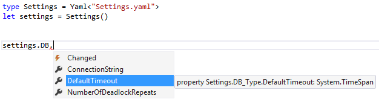

The Yaml type provider
This tutorial shows the use of the Yaml type provider.
It's generated, hence the types can be used from any .NET language, not only from F# code.
It can produce mutable properties for Scalars (leafs), which means the object tree can be loaded, modified and saved into the original file or a stream as Yaml text. Adding new properties is not supported, however lists can be replaced with new ones atomically. This is intentionally, see below.
The main purpose for this is to be used as part of a statically typed application configuration system which would have a single master source of configuration structure - a Yaml file. Then any F#/C# project in a solution will able to use the generated read-only object graph.
When you push a system into production, you can modify the configs with scripts written in F# in safe, statically checked way with full intellisense.
Using configuration from F# scripts
Create a Settings.yaml file like this:
Mail:
Smtp:
Host: smtp.sample.com
Port: 443
User: user1
Password: pass1
Pop3:
Host: pop3.sample.com
Port: 331
User: user2
Password: pass2
CheckPeriod: 00:01:00
ErrorNotificationRecipients:
- user1@sample.com
- user2@sample.com
DB:
ConnectionString: Data Source=server1;Initial Catalog=Database1;Integrated Security=SSPI;
NumberOfDeadlockRepeats: 5
DefaultTimeout: 00:05:00
Reference the type provider assembly and configure it to use your yaml file:
1: 2: 3: 4: 5: 6: |
#r "FSharp.Configuration.dll" open FSharp.Configuration // Let the type provider do it's work type Settings = Yaml<"Settings.yaml"> let settings = Settings() |

Reading and writing from the config
1: 2: 3: 4: 5: 6: 7: 8: 9: 10: 11: 12: 13: |
// read a value from the config settings.DB.ConnectionString val it : string = "Data Source=server1;Initial Catalog=Database1;Integrated Security=SSPI;" // change a value in the config settings.DB.ConnectionString <- "Data Source=server2;" settings.DB.ConnectionString val it : string = "Data Source=server2;" // write the settings back to a yaml file settings.Save(__SOURCE_DIRECTORY__ + @"\ChangedSettings.yaml") |
type Settings =
inherit Root
new : unit -> Settings
event Changed : EventHandler
member DB : DB_Type
member Mail : Mail_Type
nested type DB_Type
nested type Mail_Type
Full name: YamlProvider.Settings
--------------------
Settings() : Settings
inherit Root
Full name: FSharp.Configuration.Yaml
<summary>Generate types for read/write access to a YAML file.</summary>
<param name='FilePath'>Path to a YAML file.</param>
<param name='ReadOnly'>Whether the resulting properties will be read-only or not.</param>
<param name='YamlText'>Yaml as text. Mutually exclusive with FilePath parameter.</param>
Full name: YamlProvider.settings
member Root.Save : writer:System.IO.TextWriter -> unit
member Root.Save : stream:System.IO.Stream -> unit